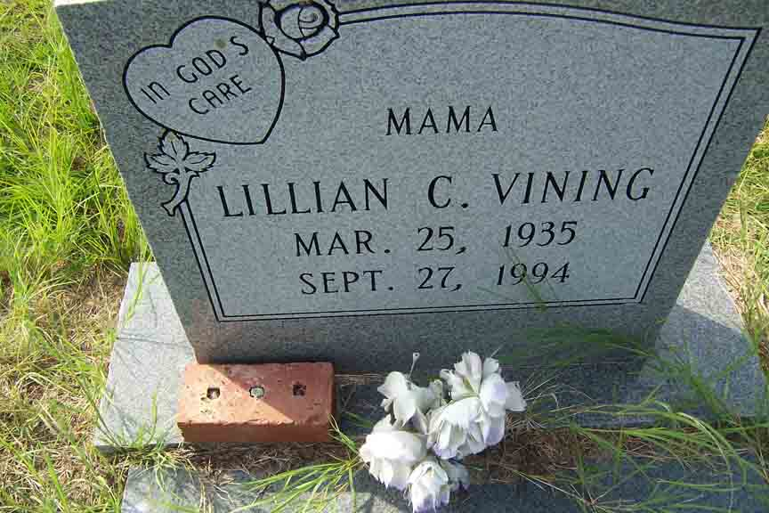

Documentation for James Orval Vining and Lillian Chaney
Death Data
Gravestone for Lillian (Chaney) Vining, in Mount Pleasant Missionary Baptist Church Cemetery, Atkinson County, Georgia (from Find A Grave):
